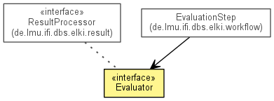

JavaScript is disabled on your browser.
Overview
Package
Class
Use
Tree
Deprecated
Index
Help
Prev Class
Next Class
Frames
No Frames
All Classes
Summary:
Nested |
Field |
Constr |
Method
Detail:
Field |
Constr |
Method
de.lmu.ifi.dbs.elki.evaluation
Interface Evaluator

All Superinterfaces:
ResultProcessor
All Known Implementing Classes:
AutomaticEvaluation
,
ClusterPairSegmentAnalysis
,
ComputeOutlierHistogram
,
ComputeSimilarityMatrixImage
,
EvaluateClustering
,
EvaluateSilhouette
,
IndexPurity
,
IndexStatistics
,
JudgeOutlierScores
,
NoAutomaticEvaluation
,
OutlierPrecisionAtKCurve
,
OutlierPrecisionRecallCurve
,
OutlierROCCurve
,
OutlierSmROCCurve
,
OutlierThresholdClustering
public interface
Evaluator
extends
ResultProcessor
Interface for post-algorithm evaluations, such as histograms, outlier score evaluations, ...
Method Summary
Methods inherited from interface de.lmu.ifi.dbs.elki.result.
ResultProcessor
processNewResult
Overview
Package
Class
Use
Tree
Deprecated
Index
Help
Release 0.6.5~20140718 (2014-07-18_1021)
Prev Class
Next Class
Frames
No Frames
All Classes
Summary:
Nested |
Field |
Constr |
Method
Detail:
Field |
Constr |
Method